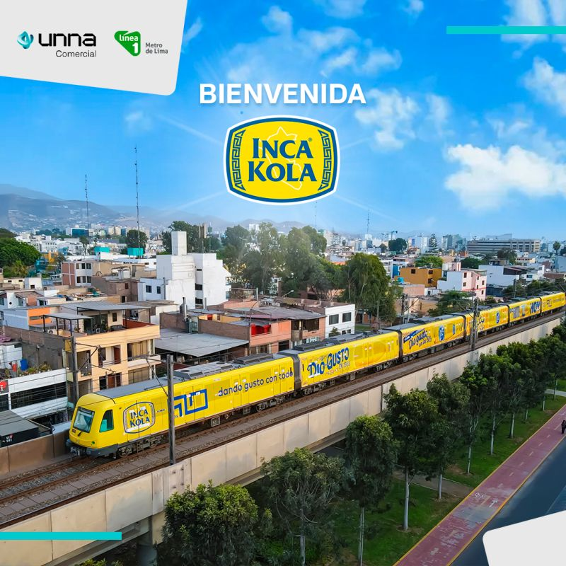

Capítulo VII
Estrategias Digitales
Impulsando el Símbolo Nacional en la Era Digital
7.1 Objetivos del Marketing
Liderazgo de Mercado
Incrementar la participación, reforzando la preferencia frente a marcas globales.
Símbolo Nacional
Consolidar el posicionamiento aprovechando la fuerte identidad cultural.
Fidelización
Potenciar campañas que resalten la tradición, la familia y la peruanidad.
Expansión Joven
Asegurar presencia en segmentos jóvenes mediante estrategias digitales e influencers.
Nuevos Momentos
Impulsar el consumo en celebraciones, comidas familiares y actividades cotidianas.
Optimización de Distribución
Asegurar disponibilidad constante en todo el territorio nacional (canales tradicionales y modernos).
7.2 Plataformas y Canales Clave
TikTok
YouTube
Sitio Web
Canales Masivos
- Televisión y Radio: Refuerzan la presencia masiva y el posicionamiento familiar y cultural.
- Publicidad en Vía Pública: Paneles y activaciones urbanas para alta recordación visual.
Puntos de Contacto
- Puntos de Venta: Estrategias de exhibición y empaques diferenciados para impulsar la compra.
- Eventos y Activaciones: Participación en ferias gastronómicas y festividades para fortalecer la identidad.
7.2 Refuerzo Visual de Canales (Vía Pública y Puntos de Venta)

7.4 Contenido Audiovisual Clave
Video Publicitario 1: Campaña de Identidad Nacional
Video Publicitario 2: Enfocado en Segmento Joven (TikTok/YouTube)